사용자 구매율과(수익률) 시스템 최적화(성능)를 고려한 의류 전자상거래 웹서비스
글로벌 패션 기업 H&M Group의 10만 건 의류 메타데이터를 기반으로 전체 커머스 인벤토리를 구축하고, 실제 구매 트랜잭션을 분석하여 '차순위 구매 예측(Next-Item Prediction)' 엔진을 구현한 프로젝트입니다. 단순 상품 나열이 아닌, 사용자가 현재 보고 있는 상품 이후 구매 확률이 가장 높은 의류를 실시간 리스트로 노출하여 전환율을 극대화하는 지능형 시스템을 설계했습니다. 대규모 트래픽 환경에서도 지연 없는 추천을 위해 CQRS와 Redis 기반등의 아키텍처 설계로 성능 최적화를 달성했습니다.
문제 해결 핵심
다중 조인 기반의 DB 부하를 해결하기 위해 CQRS 패턴을 도입했습니다. 200 VU 고부하 테스트 결과, CPU 사용량의 증가 없이 중앙값 응답 속도를 154ms에서 124ms로 단축하며 시스템 안정성을 증명했습니다.
Redis 캐싱과 단일 요청 구조를 통해 고부하 상황에서의 응답 지연을 극복했습니다. 200 VU 테스트 결과, CPU 점유율이 17.5%에서 12.0%로 감소하며 안정적으로 초당 6,852건(RPS)을 처리했습니다.
고부하 상황에서 발생하던 인증 Race Condition을 해결하고자 세션 저장소를 Redis로 이전했습니다. 고강도 부하 테스트 결과, 에러율을 1.58%에서 완벽한 0%로 안정화했습니다.
단순 인기순 추천을 넘어, 사용자 흐름을 읽는 **마르코프 체인 모델**을 직접 구현했습니다. 기존 모델 대비 MAP@20 기준 10배 이상의 정확도를 기록하며 데이터의 가치를 증명했습니다.
**Docker Swarm**을 이용한 수평 확장과 **GitHub Actions** 기반의 무중단 배포 환경을 구축하여, 어떤 상황에서도 서비스가 지속될 수 있는 견고한 운영 체계를 마련했습니다.
기술 스택
시스템 아키텍처
Erd
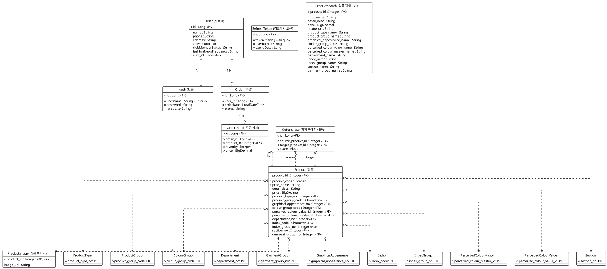
- 조회 성능을 위한 결단: 데이터 정규화의 무결성을 유지하되, 검색 시 발생하는 병목을 해결하기 위해 별도의 `ProductSearch` 역정규화 테이블을 운용합니다.
- 추천 로직의 영속화: 배치 엔진이 계산한 '상품 간 전이 확률'을 `CoPurchase` 테이블에 저장하여, 실시간 API에서 즉시 활용할 수 있도록 했습니다.
기술적 난관과 문제 해결
01. 복잡한 JOIN의 늪에서 탈출하기 (CQRS 도입)
- 고민의 시작: 서비스 규모가 커지며 검색 한 번에 5개 이상의 테이블을 조인하게 되었고, 응답 시간이 100ms를 넘어서며 DB CPU 점유율이 치솟았습니다.
- 해결의 열쇠: 단순히 하드웨어를 늘리는 대신 **CQRS 패턴**을 선택했습니다. 조인이 필요 없는 '검색 전용 읽기 모델'을 구축하고, 도메인 이벤트를 통해 데이터 정합성을 비동기로 맞추는 구조를 설계했습니다.
| 항목 | 상세 내용 |
|---|---|
| 테스트 도구 | k6 |
| 가상 사용자 수 (VUs) | 200명 |
| 테스트 유지 시간 | 20초 |
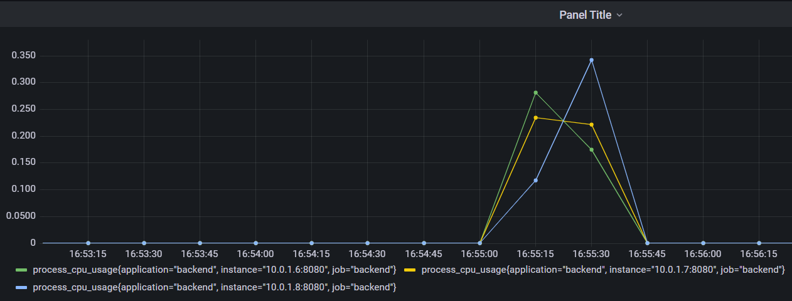
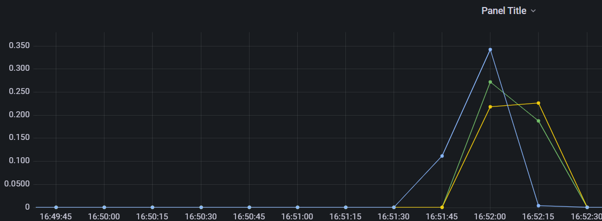
| 성능 지표 | V1 (Search) | V2 (Search) |
|---|---|---|
| 중앙값 응답 시간 (Med) | 154.44ms | 124.24ms |
| 평균 응답 시간 (Avg) | 644.13ms | 641.79ms |
| 초당 요청 수 (RPS) | 303.05/s | 303.61/s |
02. API 응답 속도 극대화 (Redis Caching 전략)
- 고민의 시작: 추천 시스템 등 연산 집약적인 로직이 매번 DB를 거치며 전체 API 성능의 병목 지점이 되었습니다. 특히 반복적인 조회 요청은 불필요한 DB I/O를 발생시켰습니다.
- 해결의 열쇠: 데이터의 변경 빈도가 낮고 조회 빈도가 높은 특성을 활용해 **Redis 기반 캐싱 레이어**를 구축했습니다. Cache-Aside 전략을 통해 반복되는 요청은 메모리에서 즉시 반환하도록 구현했습니다.
| 항목 | 상세 내용 |
|---|---|
| 테스트 도구 | k6 |
| 가상 사용자 수 (VUs) | 200명 |
| 테스트 유지 시간 | 20초 |
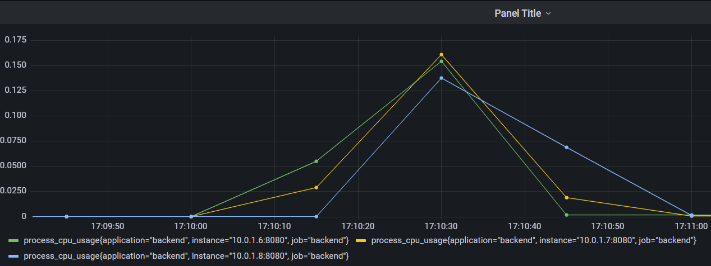
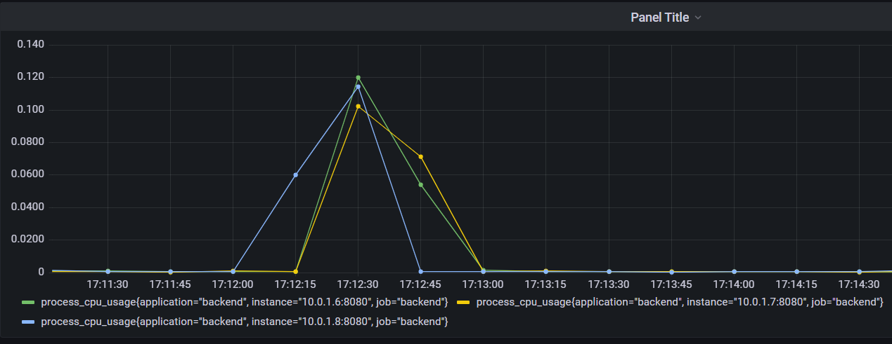
| 성능 지표 | V1 (Co-Purchase) | V2 (Co-Purchase) |
|---|---|---|
| 중앙값 응답 시간 (Med) | 24.20ms | 21.66ms |
| 초당 요청 수 (RPS) | 6168.68/s | 6852.87/s |
| 95% 응답 시간 (p95) | 92.59ms | 70.68ms |
03. 인증 시스템 안정성 및 확장성 확보 (Stateless 아키텍처)
- 고민의 시작: 기존 RDB 기반 인증 방식이 고부하 상황에서 Race Condition을 유발하며 1.58%의 에러율을 기록했습니다. 또한, 서버 확장 시 세션 동기화 문제라는 확장성의 한계에 부딪혔습니다.
- 해결의 열쇠: 토큰 저장소를 **Redis In-Memory**로 이전하여 I/O 병목을 해결하고, JWT를 결합한 **Stateless 아키텍처**를 완성했습니다. 이를 통해 모든 서버 인스턴스가 동일한 인증 상태를 공유할 수 있게 되었습니다.
| 항목 | 상세 내용 |
|---|---|
| 테스트 도구 | k6 |
| 가상 사용자 수 (VUs) | 100명 |
| 테스트 유지 시간 | 10초 |
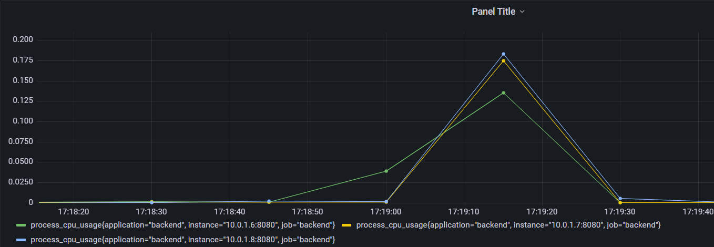
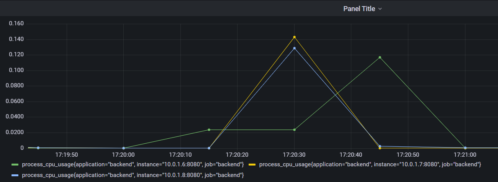
| 성능 지표 | V1 (DB 기반) | V2 (Redis 기반) |
|---|---|---|
| 평균 응답 시간 (Avg) | 154.81ms | 18.46ms |
| 중앙값 응답 시간 (Med) | 39.00ms | 11.00ms |
| 에러율 (Error Rate) | 1.58% | 0.00% |
04. 사용자 맞춤 추천을 위한 데이터 엔지니어링
- 고민의 시작: "사용자가 다음에 구매할 물건을 미리 알 수 없을까?"라는 비즈니스적 요구에 부딪혔습니다. 단순 인기순 추천은 개인화된 경험을 제공하기에 부족했습니다.
- 해결의 열쇠: 수만 명의 사용자 동선을 분석하여 **마르코프 체인 전이 확률 모델**을 구축했습니다. 이를 통해 사용자의 현재 장바구니 상태와 과거 이력에 기반한 최적의 '다음 구매 상품'을 제안하는 엔진을 개발했습니다.
- MAP@20 개선: 추천 리스트에 실제 구매 상품이 포함될 확률 증가 → 사용자의 탐색 비용 절감
- NDCG@20 개선: 선호 상품을 상단에 노출 → 구매 결정 과정 단축
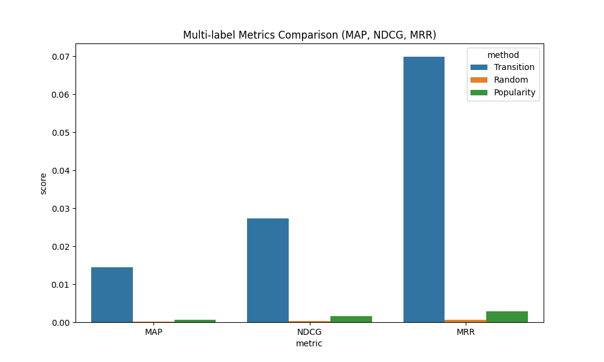
| 모델명 | MAP@20 (정확도) | NDCG@20 (랭킹 품질) | 성능 요약 |
|---|---|---|---|
| 마르코프 전이 예측 엔진 | 0.1052 | 0.1235 | 압도적 정밀도 |
| 글로벌 인기순 모델 | 0.0098 | 0.0153 | 단순 인기순 |
운영과 품질
-
확장 가능한 구조: Docker Swarm을 통해 트래픽 급증 시 서버를 유연하게 늘리는 구조를 만들었습니다.
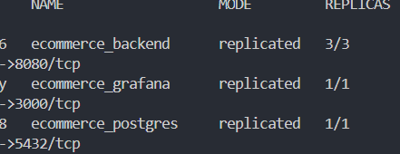
-
자동화된 신뢰: **TDD**와 GitHub Actions로 안전하고 빠른 파이프라인을 완성했습니다.
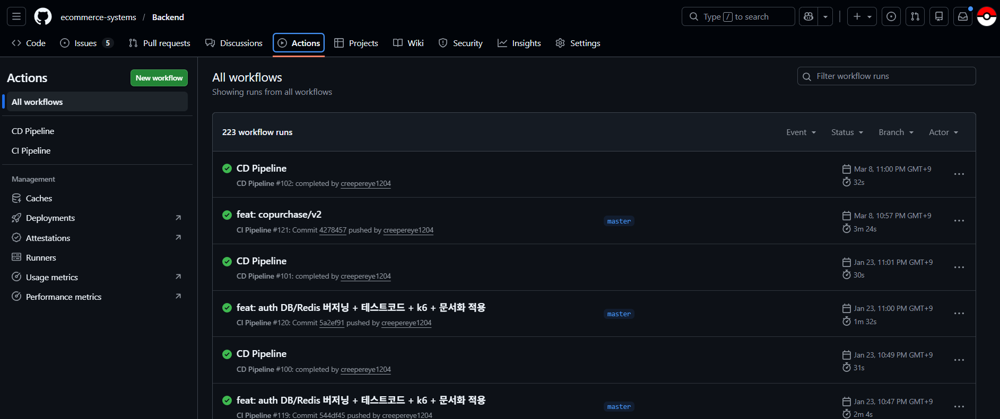
-
가시성 확보: Prometheus와 Grafana 대시보드를 구축하여, 장애가 발생하기 전 징후를 먼저 발견할 수 있는 관제 체계를 갖췄습니다.
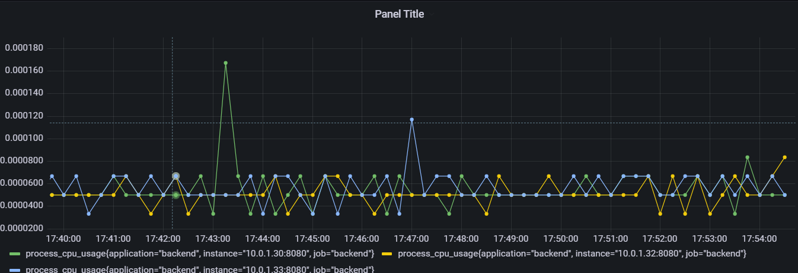
비전
- 현재의 모놀리식 구조를 넘어, CDC(Change Data Capture)를 도입하여 도메인별로 완벽히 격리된 서비스 생태계를 계획하고 있습니다.
- LLM을 활용한 지능형 상품 검색 등, 사용자가 상상하는 것 이상의 편리함을 기술로 구현해보고자 합니다.